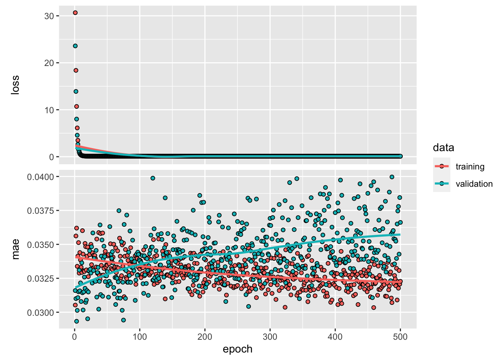

knitr::opts_chunk$set(
message=FALSE, error=TRUE, warning=FALSE
)
# Modeling
library(keras)
library(mgcv)
# Convenience
library(dplyr)
library(broom)
library(ggplot2)
# Sacrificing a goat to the python env
#reticulate::use_condaenv("r-reticulate", required = TRUE)
reticulate::use_condaenv("renv/python/r-reticulate/bin/python")
reticulate:::ensure_python_initialized()
tensorflow::tf_config()## TensorFlow v2.5.0 (~/repos/github/jemus42/DeepPAM/renv/python/r-reticulate/lib/python3.6/site-packages/tensorflow)
## Python v3.6 (~/repos/github/jemus42/DeepPAM/renv/python/r-reticulate/bin/python)# pamtools I guess?
library(pammtools)
library(survival)
# data("veteran", package = "survival") # load veteran data
veteran <- survival::veteranReference models from https://adibender.github.io/pammtools/articles/basics.html#subset-with-unique-event-times and https://adibender.github.io/pammtools/articles/basics.html#piece-wise-exponential-additive-model.
# remove ties to illustrate equivalence with Cox approach
vetu <- filter(veteran, !duplicated(time))
ped_vetu <- vetu %>%
as_ped(Surv(time, status)~., cut = unique(vetu$time), id = "id")
## PEM (Pois GLM)
pem_age <- glm(ped_status ~ interval - 1 + age, data = ped_vetu,
family = poisson(), offset = offset)
## CoxPH
cph_age <- coxph(Surv(time, status) ~ age, data = vetu)
## PAM
pam_age <- gam(ped_status ~ s(tend) + age, data = ped_vetu,
family = "poisson", offset = offset)
cbind(
pam = coef(pam_age)["age"],
pem = coef(pem_age)["age"],
cox = coef(cph_age)["age"]
)## pam pem cox
## age 0.007543308 0.006413903 0.006413903Extracting the useful stuff from the PEM
# smoothing param for later
pam_lambda <- pam_age$sp
# S matrix
pam_S <- pam_age$smooth[[1]]$S[[1]]
# > "David und mir ist aufgefallen, dass man im Falle vom PAM noch das Lambda durch nrow(ped) teilen muss" ...like this?
pam_Slambda <- (pam_lambda / nrow(ped_vetu)) * pam_S
# Smooth terms from model matrix
pam_modelmat_smooth <- model.matrix(pam_age)[, grepl(pattern = "^s\\(", x = colnames(model.matrix(pam_age)))]# Define inputs, 1 linear + 1 smooth effect (shape 9)
linear_input <- layer_input(shape = c(1), name = "linear_in")
smooth_input <- layer_input(shape = c(9), name = "smooth_in")
# Define intermediate outputs
linear_out <- linear_input %>%
layer_dense(units = 1, activation = "linear", name = "linear_effect")
# Smooth out w/ bias to avoid multicollinearity
smooth_out_reg <- smooth_input %>%
layer_dense(
units = 1, activation = "linear", use_bias = FALSE, name = "smooth_effect",
kernel_regularizer = function(x) {
k_mean(k_batch_dot(x,
k_dot(tensorflow::tf$constant(pam_Slambda, dtype = "float32"), x), axes = 2))
}
)
# Input combination w/ simple adding
# exponential activation b/c Poisson -> log link?
combined_out_reg <- layer_add(c(linear_out, smooth_out_reg)) %>%
layer_activation(activation = "exponential", name = "output")
# Combine the above to a keras model
pam_nn <- keras_model(
inputs = c(linear_input, smooth_input),
outputs = c(combined_out_reg)
)Not sure about loss and target yet, gotta do risk set thinking (X_pad and sample_weight and sample_weight_mode)
Also not sure how to offset
X_pad (NYI)One row per \(\text{subject id} \times \text{unique interval}\), with 1 indicating presence in the respective risk set? Using tend as interval identifier because that’s thwe variable we used for the pem?
keras docs not doing me any favors wrt the proper format.
X_pad <- right_join(
ped_vetu %>%
select(id, tend) %>%
mutate(weight = 1),
ped_vetu %>%
tidyr::expand(id, tend)
) %>%
mutate(weight = ifelse(is.na(weight), 0, weight))
# quick glance and random intervals of id 1
X_pad %>%
filter(id == 1) %>%
sample_n(5)## # A tibble: 5 x 3
## id tend weight
## <int> <dbl> <dbl>
## 1 1 133 0
## 2 1 357 0
## 3 1 53 1
## 4 1 1 1
## 5 1 378 0pam_nn %>%
compile(
optimizer = optimizer_adam(),
metrics = "mae",
#sample_weights = X_pad,
loss = "poisson"
)
pam_nn## Model
## Model: "model"
## ________________________________________________________________________________
## Layer (type) Output Shape Param # Connected to
## ================================================================================
## linear_in (InputLayer) [(None, 1)] 0
## ________________________________________________________________________________
## smooth_in (InputLayer) [(None, 9)] 0
## ________________________________________________________________________________
## linear_effect (Dense) (None, 1) 2 linear_in[0][0]
## ________________________________________________________________________________
## smooth_effect (Dense) (None, 1) 9 smooth_in[0][0]
## ________________________________________________________________________________
## add (Add) (None, 1) 0 linear_effect[0][0]
## smooth_effect[0][0]
## ________________________________________________________________________________
## output (Activation) (None, 1) 0 add[0][0]
## ================================================================================
## Total params: 11
## Trainable params: 11
## Non-trainable params: 0
## ________________________________________________________________________________history <- pam_nn %>%
fit(
# linear effect for age, smooth effect of tend via model matrix
x = list(as.matrix(ped_vetu[, "age"]), pam_modelmat_smooth),
y = ped_vetu$ped_status,
epochs = 200,
batch_size = 32,
validation_split = 0.2,
# sample_weight = "temporal",
verbose = interactive()
)
plot(history)
get_weights(pam_nn)## [[1]]
## [,1]
## [1,] 0.08814956
##
## [[2]]
## [1] -0.2962492
##
## [[3]]
## [,1]
## [1,] 0.2235651
## [2,] -0.3346148
## [3,] -0.3869227
## [4,] 0.3255725
## [5,] -0.7140702
## [6,] -0.3107129
## [7,] 0.3493645
## [8,] -0.4575109
## [9,] -0.5391268# Reference coefs from PAM
list(
coef(pam_age)[1],
coef(pam_age)[2],
as.matrix(coef(pam_age)[-c(1,2)])
)## [[1]]
## (Intercept)
## -5.420252
##
## [[2]]
## age
## 0.007543308
##
## [[3]]
## [,1]
## s(tend).1 5.363744e-06
## s(tend).2 -2.013694e-05
## s(tend).3 2.742932e-05
## s(tend).4 -2.054418e-05
## s(tend).5 2.522479e-05
## s(tend).6 -2.681590e-05
## s(tend).7 -2.600768e-05
## s(tend).8 1.590160e-04
## s(tend).9 -6.838869e-02